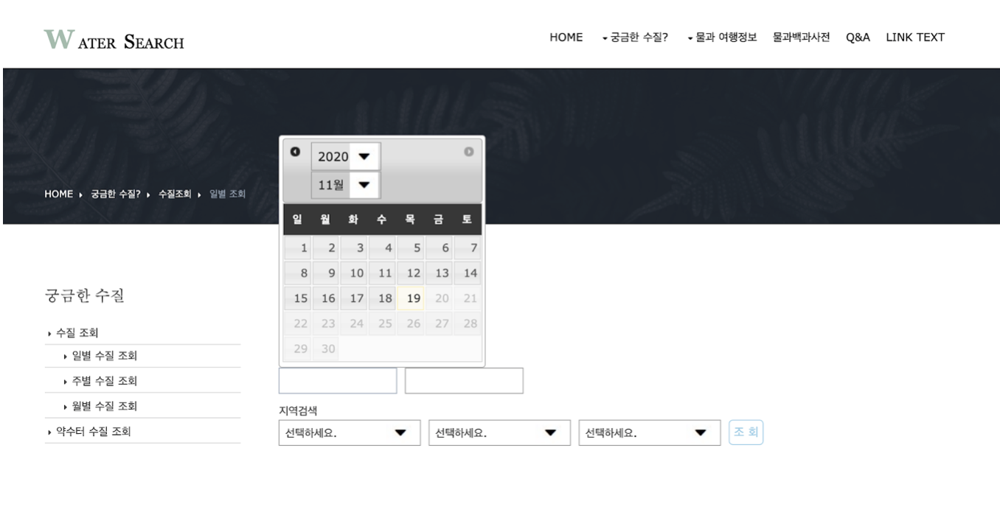
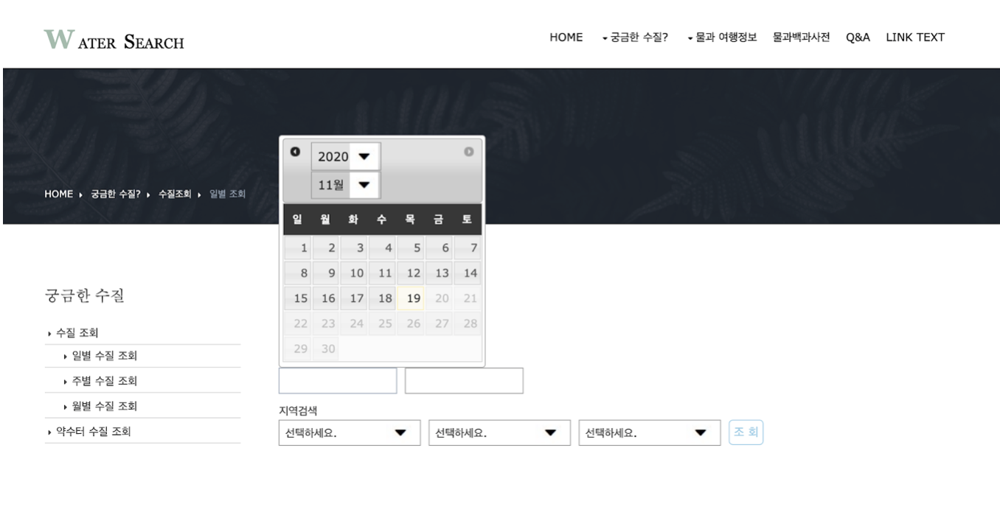

Project information
- Category: 우리동네 수질 조회사이트
- Project date: 2020/10/23 ~
- Project URL: 아직 미정
우리 동네 수질 확인 사이트
공공데이터 포털의 정보 조회 서비스 (상수도법정수질정보 조회,지방상수도 수질,광역정수장 수질,물과 여행 정보,물 백과사전 정보,가뭄 뉴스정보)의 데이터를 파싱하여 데이터 활용함. 클라이언트가 보기 쉽게 Java Script와 CSS를 활용하여 페이지의 화면을 구성하고, ajax의 비동기처리와 페이징 처리를 이용해 정보조회를 쉽게 할 수 있도록 웹사이트를 제작하였다.
사용 언어
#JAVA(JSP/Servlet) #SQL developer(Oracle 11g) #Tomcat 8.5 #JavaScript #CSS3 #Bootstrap
페이지 구성
- 사용자가 조회하고 싶은 지역의 수질정보를 조회할 수 있는 수질 조회 페이지
-전국 약수터 수질 정보 조회 검색 기능을 통해 약수터 이용 전 약수의 수질 적합, 부적합 여부를 조회 페이지
- 대한민국 5대강 여행 코스 추천 페이지
- 문의 게시판
기대 효과
- 사용자가 조회하고 싶은 지역의 수질정보를 조회하여 ‘유충’, ‘대장균’ 등이 발견되는 상황이 발생하였을 경우, 일별, 주별, 월별 수질 관리 현황을 실시간으로 알 수 있도록 한다.
- 전국 약수터 수질 정보 조회 검색 기능을 통해 약수터 이용 전 약수의 수질 적합, 부적합 여부를 조회할 수 있다.
- 대한민국 5대강 여행 코스를 소개해 국내 숨은 명소 활성화를 통해 지역 경제를 발전시킬 수 있다.
- 사용자의 불편한 점과 궁금한 점에 대해 게시글을 남길 수 있고, 관리자는 그에 대한 대답을 남길 수 있다.
본인 역할
1. 행정구역과 정수장 정보를 DB에 넣은 후 SQl문으로 관할 지역에 맞게 selectbox가 나오게 설정하였다.
2. 공공데이터 포털의 수질에 관련된 Open api(상수도법정수질정보 조회,지방상수도 수질,광역정수장 수질) 활용신청을 통해 데이터를 파싱하였다.
3. 조회 시 검색 지역에 맞는 수질데이터를 화면에 표현해줌.
4. 익숙하지 않은 수질 데이터 용어를 모달창을 이용하여 사용자가 확인 할 수 있게 제작하였다.
5. bootstrap을 활용하여 전반적인 css 담당